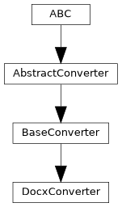

pyTRLCConverter.docx_converter
Converter to Word docx format.
Author: Norbert Schulz (norbert.schulz@newtec.de)
Classes
Converter to docx format. |
Module Contents
- class pyTRLCConverter.docx_converter.DocxConverter(args: Any)[source]
Bases:
pyTRLCConverter.base_converter.BaseConverter
Converter to docx format.
The following Word docx objects are used:
Document: Represents the entire Word document.
Paragraph: A block of text in the document with its own formatting properties.
Run: A contiguous run of text with the same formatting within a paragraph.
Table: A two-dimensional structure for presenting data in rows and columns.
- _convert_record_object(record: trlc.ast.Record_Object, level: int, translation: dict | None) pyTRLCConverter.ret.Ret[source]
Process the given record object.
- Parameters:
record (Record_Object) – The record object.
level (int) – The record level.
translation (Optional[dict]) – Translation dictionary for the record object. If None, no translation is applied.
- Returns:
Status
- Return type:
- _get_trlc_ast_walker() pyTRLCConverter.trlc_helper.TrlcAstWalker[source]
If a record object contains a record reference, the record reference will be converted to a hyperlink. If a record object contains an array of record references, the array will be converted to a list of links. Otherwise the record object fields attribute values will be written to the table.
- Returns:
The TRLC AST walker.
- Return type:
- _on_array_aggregate_begin(array_aggregate: trlc.ast.Array_Aggregate) None[source]
Handle the beginning of a list.
- Parameters:
array_aggregate (Array_Aggregate) – The AST node.
- _on_array_aggregate_finish(array_aggregate: trlc.ast.Array_Aggregate) None[source]
Handle the end of a list.
- Parameters:
array_aggregate (Array_Aggregate) – The AST node.
- _on_list_item(expression: trlc.ast.Expression, item_result: Any) Any[source]
Handle the list item by adding a bullet point.
- Parameters:
expression (Expression) – The AST node.
item_result (Union[list[DocumentObject],DocumentObject]) – The result of processing the list item.
- Returns:
The processed list item.
- Return type:
Any
- _on_record_reference(record_reference: trlc.ast.Record_Reference) None[source]
Process the given record reference value and return a hyperlink paragraph.
- Parameters:
record_reference (Record_Reference) – The record reference value.
- _on_string_literal(string_literal: trlc.ast.String_Literal) None[source]
Process the given string literal value.
- Parameters:
string_literal (String_Literal) – The string literal value.
- _other_dispatcher(expression: trlc.ast.Expression) None[source]
Dispatcher for all other expressions.
- Parameters:
expression (Expression) – The expression to process.
- _render(package_name: str, type_name: str, attribute_name: str, attribute_value: str) None[source]
Render the attribute value depened on its format.
- Parameters:
package_name (str) – The package name.
type_name (str) – The type name.
attribute_name (str) – The attribute name.
attribute_value (str) – The attribute value.
- convert_record_object_generic(record: trlc.ast.Record_Object, level: int, translation: dict | None) pyTRLCConverter.ret.Ret[source]
Process the given record object in a generic way.
The handler is called by the base converter if no specific handler is defined for the record type.
- Parameters:
record (Record_Object) – The record object.
level (int) – The record level.
translation (Optional[dict]) – Translation dictionary for the record object. If None, no translation is applied.
- Returns:
Status
- Return type:
- convert_section(section: str, level: int) pyTRLCConverter.ret.Ret[source]
Process the given section item.
- Parameters:
section (str) – The section name
level (int) – The section indentation level
- Returns:
Status
- Return type:
- static docx_add_bookmark(paragraph: docx.text.paragraph.Paragraph, bookmark_name: str) None[source]
Adds a bookmark to a paragraph.
- Parameters:
paragraph (Paragraph) – The paragraph to add the bookmark to.
bookmark_name (str) – The name of the bookmark.
- static docx_add_link_to_bookmark(paragraph: docx.text.paragraph.Paragraph, bookmark_name: str, link_text: str) None[source]
Add a hyperlink to a bookmark in a paragraph.
- Parameters:
paragraph (Paragraph) – The paragraph to add the hyperlink to.
bookmark_name (str) – The name of the bookmark.
link_text (str) – The text to display for the hyperlink.
- finish() pyTRLCConverter.ret.Ret[source]
Finish the conversion.
- Returns:
Status
- Return type:
- static get_subcommand() str[source]
Return subcommand token for this converter.
- Returns:
Status
- Return type:
- classmethod register(args_parser: Any) None[source]
Register converter specific argument parser.
- Parameters:
args_parser (Any) – Argument parser
- OUTPUT_FILE_NAME_DEFAULT = 'output.docx'
- _ast_meta_data = None
- _block_item_container: docx.blkcntnr.BlockItemContainer | None = None
- _docx
- _list_item_indent_level = 0